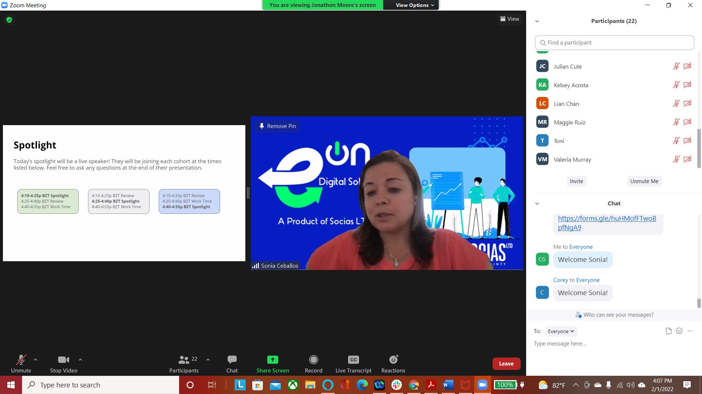
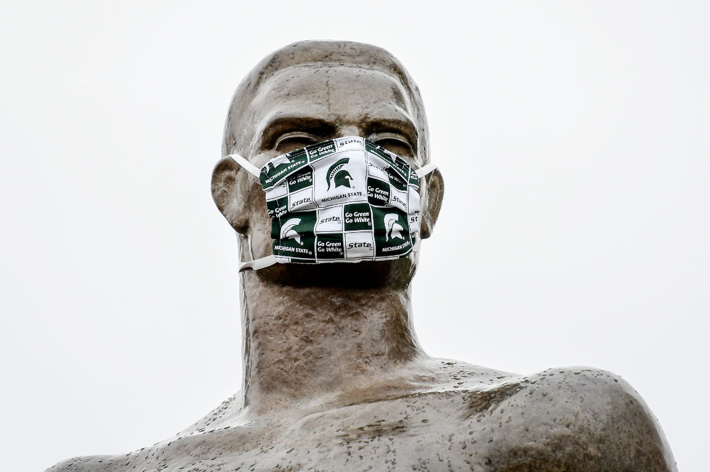

News

Week 4
We made it through our the third week! We'd like to thank and congratulate our students for their energy and enthusiasm; our students' parents for their ongoing support and encouragement; our mentors for making each Tuesday and Saturday exciting, engaging, and entertaining; and our advisors for their organization, coordination and commitment to making this a reality. Without you all, we wouldn't be here.
You guys make it through one of the most challenging aspects of programming, functions! Functions are the major foundations of all programming and we're so proud of the progress you guys have made! Keep up the amazing work.
Before we dive into a full recap of our last few meetings, we've got a few announcements.
Announcements
- Zoom Link: https://msu.zoom.us/j/96070110748 (password: see email)
- The Summer Immersion Program (SIP) is a live, virtual, 2-week introductory computer science course for current eligible 9th, 10th, and 11th grade US students and international students ages 14-18. SIP participants learn web development with HTML, CSS, and JavaScript while getting an inside look into the tech industry through incredible company partners. In addition to a completely free program, GWC offers grants up to $500 and tech support for qualifying students.
- The Self-Paced Program is a 6-week flexible computer science course for current eligible 9th, 10th, 11th, and 12th grade US students (including SIP alumni and graduating seniors) and international students ages 14-18 who prefer not to adhere to a set schedule. Self-Paced Program participants can choose to earn beginner-level badges in HTML, CSS, and JavaScript for web development or an intermediate-level badge in Python for cybersecurity. Students will also have the opportunity to build community through weekly live advisory sessions and Girls Who Code activities.
1. Bonus Hour
Join us at this week's Bonus Hour on Thursday, 27 January from 6-7pm Belize Time (BZT), open to all MSU x Pathlight Belize Coding Club students. Two student mentors will be available on zoom during the bonus hour—this is a great opportunity for 1:1 discussion and support!
2. Looking Back
Can you believe we've already completed 2 weeks? Time flies when you're having fun! So far, we've covered the basics of Python and Tracy the Turtle, along with an introduction to loops and functions. Check out our resources page for the slides from each meeting.
3. Looking Ahead
Remember that we meet every Saturday from 10-11:30a BZT and Tuesday from 4-5:30p BZT, through 26 February! This week, we'll be introducing functions, which will help us simplify our code.
4. GWC Summer Programs
What are you up to this summer? Consider applying to one of two Girls Who Code (GWC) Summer Programs!
Girls Who Code is a US-based nonprofit which aims to close the gender gap in technology, and sponsors our sister club, Spartan Girls Who Code.
5. Questions?
As always, please reach out with any questions / concerns / ideas / feedback to belizecc@egr.msu.edu.
Meeting Recap
Our first three weeks have been an absolute blast, featuring a healthy mix of icebreakers, spotlights on individuals in tech, collaborative code-alongs, and hands-on exercises.
We had the honor of having our amazing live spotlight Sonia Ceballos!. Sonia Ceballos is an electronic and telecommunications engineer with 23 years of experience. With a passion for technology and readership; making the impossible-possible. Currently the General manager of Socias. Digital transformation firm
One of our icebreakers included the students making their own Digital Art! Kudos to the students for their creativity!
Meeting 1 included a Zoom orientation and program overview; Meetings 2 and 3 introduced Python and basic commands to control Tracy the Turtle; Meetings 4 and 5 introduced for loops to simplify our code; Meetings 6 and 7 introduced loops and functions; And Meetings 8 and 9 included a functions review and introduced variables, inputs and parameters!


Above are a few key slides from our last two meetings to give an idea of what we've been up to. Be sure to check out our resources page for the full set of slides from each meeting!
Mentor Spotlight

Dalety Aveiro
Katie Albus
What are you studying?
Mechanical Engineering with concentration in Energy
How did you become interested in computer science?
Computer science is part of our daily lives from when we wake up to when we go to bed.
What's something cool you've done with computer science?
I designed an app that helps Michigan State University students recycle effectively.
What are you hoping to do with computer science in the future?
In the future, I will apply code to optimize energy systems.
What are you studying?
Computer Engineering
How did you become interested in computer science?
I participated in an MSU outreach program where I was introduced to coding.
What's something cool you've done with computer science?
I built a website for my sister for her wedding!
What are you hoping to do with computer science in the future?
I am hoping to build augmented reality systems to improve STEM education accessiblity for persons with disabilities.

Khushi Vora

Sarah Swann
What are you studying?
Computer Science with a Minor in Cognitive Science.
How did you become interested in computer science?
The logical reasoning involved seemed really appealing to me.
What's something cool you've done with computer science?
I have used Google Earth Engine's code editor to extract satellite data to make time lapses and study them.
What are you hoping to do with computer science in the future?
I want to explore the cognitive science interface, learn more about AI and apply my knowledge to research/industrial projects.
What are you studying?
CSE Major, business minor
How did you become interested in computer science?
I became interested in computer science my senior year of high school in a coding class.
What's something cool you've done with computer science?
Something cool I've done is building an app for a class, that I want to continue to develop as a personal project.
What are you hoping to do with computer science in the future?
In the future I want to work with app and website development.
Stay strong this week, coders! We're almost there!
-The MSU x Pathlight Belize Team
Week 3
We made it through our the second week! We'd like to thank and congratulate our students for their energy and enthusiasm; our students' parents for their ongoing support and encouragement; our mentors for making each Tuesday and Saturday exciting, engaging, and entertaining; and our advisors for their organization, coordination and commitment to making this a reality. Without you all, we wouldn't be here.
You guys make it through loops and functions! Loops and functions are the major foundations of all programming and we're so proud of the progress you guys have made! Keep up the amazing work.
Before we dive into a full recap of our last few meetings, we've got a few announcements.
Announcements
- Zoom Link: https://msu.zoom.us/j/96070110748 (password: see email)
- The Summer Immersion Program (SIP) is a live, virtual, 2-week introductory computer science course for current eligible 9th, 10th, and 11th grade US students and international students ages 14-18. SIP participants learn web development with HTML, CSS, and JavaScript while getting an inside look into the tech industry through incredible company partners. In addition to a completely free program, GWC offers grants up to $500 and tech support for qualifying students.
- The Self-Paced Program is a 6-week flexible computer science course for current eligible 9th, 10th, 11th, and 12th grade US students (including SIP alumni and graduating seniors) and international students ages 14-18 who prefer not to adhere to a set schedule. Self-Paced Program participants can choose to earn beginner-level badges in HTML, CSS, and JavaScript for web development or an intermediate-level badge in Python for cybersecurity. Students will also have the opportunity to build community through weekly live advisory sessions and Girls Who Code activities.
1. Bonus Hour
Join us at this week's Bonus Hour on Thursday, 27 January from 6-7pm Belize Time (BZT), open to all MSU x Pathlight Belize Coding Club students. Two student mentors will be available on zoom during the bonus hour—this is a great opportunity for 1:1 discussion and support!
2. Looking Back
Can you believe we've already completed 2 weeks? Time flies when you're having fun! So far, we've covered the basics of Python and Tracy the Turtle, along with an introduction to loops and functions. Check out our resources page for the slides from each meeting.
3. Looking Ahead
Remember that we meet every Saturday from 10-11:30a BZT and Tuesday from 4-5:30p BZT, through 26 February! This week, we'll be introducing functions, which will help us simplify our code.
4. GWC Summer Programs
What are you up to this summer? Consider applying to one of two Girls Who Code (GWC) Summer Programs!
Girls Who Code is a US-based nonprofit which aims to close the gender gap in technology, and sponsors our sister club, Spartan Girls Who Code.
5. Questions?
As always, please reach out with any questions / concerns / ideas / feedback to belizecc@egr.msu.edu.
Meeting Recap
Our first two weeks have been an absolute blast, featuring a healthy mix of icebreakers, spotlights on individuals in tech, collaborative code-alongs, and hands-on exercises. Meeting 1 included a Zoom orientation and program overview; Meetings 2 and 3 introduced Python and basic commands to control Tracy the Turtle; Meetings 4 and 5 introduced for loops to simplify our code; and Meetings 6 and 7 introduced loops and functions.

Above are a few key slides from our two few meetings to give an idea of what we've been up to. Be sure to check out our resources page for the full set of slides from each meeting!
Mentor Spotlight

Katie White
David VanderSloot
What are you studying?
Double major in Computer Science and Criminal Justice at MSU.
How did you become interested in computer science?
My mom was a computer science teacher in high school and she introduced me to coding!
What's something cool you've done with computer science?
I've built my own code compiler and interpreter.
What are you hoping to do with computer science in the future?
I want to learn how to make websites.
What are you studying?
Computational Data Science
How did you become interested in computer science?
I went to a coding camp and learned to make a simple game!
What's something cool you've done with computer science?
In one of my classes, we did a project using machine learning to examine photos of Mars and determine what was in the images.
What are you hoping to do with computer science in the future?
Use this knowledge, and apply it to real world problems for a company of some kind.
Megan Gendjar
Joao Vitor
What are you studying?
Plant, Soil and Microbial Sciences
How did you become interested in computer science?
I started coding in High School and had a lot of fun learning back then, I recently was able to start programming again and joining it with my research interests.
What's something cool you've done with computer science?
When I first learned to code, I made a minesweeper-like program and it was really challenging and rewarding once I got it to work!
What are you hoping to do with computer science in the future?
I am hoping to include coding in my future research and learn more about computational modeling.
What are you studying?
Majoring in computer Science Computer Science in MSU
How did you become interested in computer science?
I wanted to work in Game Design
What's something cool you've done with computer science?
I wrote a pong game.
What are you hoping to do with computer science in the future?
I hope to be working on more games that can improve the mastery of my knowledge
Stay strong this week, coders!
-The MSU x Pathlight Belize Team
Week 2
We made it through our first week! We'd like to thank and congratulate our students for their energy and enthusiasm; our students' parents for their ongoing support and encouragement; our mentors for making each Tuesday and Saturday exciting, engaging, and entertaining; and our advisors for their organization, coordination and commitment to making this a reality. Without you all, we wouldn't be here.
Computer Science is challenging and exciting, learning to code is so important to teach students how to communicate and think logically. Coding helps students understand the world around them better. Coding fosters creativity and allows students to apply their creative thinking skills. Joining the MSU x Pathlight Belize Coding Club is a great way to learn these skills in a challenging, engaging, and positive environment. The challenges you overcome, the views you enjoy, and the friends you make are what it's all about.
Before we dive into a full recap of our first five meetings, we've got a few announcements.
Announcements
- Zoom Link: https://msu.zoom.us/j/96070110748 (password: see email)
- The Summer Immersion Program (SIP) is a live, virtual, 2-week introductory computer science course for current eligible 9th, 10th, and 11th grade US students and international students ages 14-18. SIP participants learn web development with HTML, CSS, and JavaScript while getting an inside look into the tech industry through incredible company partners. In addition to a completely free program, we offer grants up to $500 and tech support for qualifying students.
- The Self-Paced Program is a 6-week flexible computer science course for current eligible 9th, 10th, 11th, and 12th grade US students (including SIP alumni and graduating seniors) and international students ages 14-18 who prefer not to adhere to a set schedule. Self-Paced Program participants can choose to earn beginner-level badges in HTML, CSS, and JavaScript for web development or an intermediate-level badge in Python for cybersecurity. Students will also have the opportunity to build community through weekly live advisory sessions and Girls Who Code activities.
1. Bonus Hour
Join us at this week's Bonus Hour on Thursday, 27 January from 6-7pm Belize Time (BZT), open to all MSU x Pathlight Belize Coding Club students. Two student mentors will be available on zoom during the bonus hour—this is a great opportunity for 1:1 discussion and support!
2. Looking Back
Can you believe we've already completed our first five meetings? Time flies when you're having fun! So far, we've covered the basics of Python and Tracy the Turtle, along with an introduction to loops. Check out our resources page for the slides from each meeting.
3. Looking Ahead
Remember that we meet every Saturday from 10-11:30a BZT and Tuesday from 4-5:30p BZT, through 26 February! This week, we'll be introducing functions, which will help us simplify our code.
4. GWC Summer Programs
What are you up to this summer? Consider applying to one of two Girls Who Code (GWC) Summer Programs!
Girls Who Code is a US-based nonprofit which aims to close the gender gap in technology, and sponsors our sister club, Spartan Girls Who Code.
5. Questions?
As always, please reach out with any questions / concerns / ideas / feedback to belizecc@egr.msu.edu.
Meeting Recap
Our first five meetings have been an absolute blast, featuring a healthy mix of icebreakers, spotlights on individuals in tech, collaborative code-alongs, and hands-on exercises. Meeting 1 included a Zoom orientation and program overview; Meetings 2 and 3 introduced Python and basic commands to control Tracy the Turtle; and Meetings 4 and 5 introduced for loops to simplify our code.

Above are a few key slides from our first five meetings to give an idea of what we've been up to. Be sure to check out our resources page for the full set of slides from each meeting!
Mentor Spotlight
Caroline Gormely

Jonathon Moore
What are you studying?
Computer Science
How did you become interested in computer science?
I participated in an outreach program aimed at getting women involved in computer science the summer before my first year of college.
What's something cool you've done with computer science?
I wrote code to improve a data cell selection process last summer when I interned at Google.
What are you hoping to do with computer science in the future?
I hope to work as a software engineer after graduation and use code to improve a user's experience with technology!
What are you studying?
Computer Science, with a minor in Game Design and Development
How did you become interested in computer science?
I first became interested in computer science in my first computer science class. I didn't know if I'd like it, but I became hooked on the problem-solving aspect of computer science.
What's something cool you've done with computer science?
I've coded a video game that has been sold to raise money for charity.
What are you hoping to do with computer science in the future?
In the future I hope to one day either contribute code to a large game or create a full game on my own.
Judy Effendi

Ryan Spencer
What are you studying?
Computer Science, with a minor in Spanish
How did you become interested in computer science?
I first became interested in Computer Science during my senior year AP Computer Science class.
What's something cool you've done with computer science?
Over the summer, I interned at AIM Plastics and worked on displaying live data on the company's server!
What are you hoping to do with computer science in the future?
In the future I want to develop my own application!
What are you studying?
Applied Engineering, with a concentration in Suppy Chain Management
How did you become interested in computer science?
I've been around it my last 4 years and have seen how amazing it can be—and how everyone who does it seems to love it.
What's something cool you've done with computer science?
My team and I used MATLAB to program a robot to navigate through an obstacle course in one of my first engineering courses.
What are you hoping to do with computer science in the future?
I plan on writing code that can help make the process of building infrastructure be safer and more sustainable.
Stay strong this week, coders!
-The MSU x Pathlight Belize Team
Spring 2022
We are excited to launch the first SS22 MSU x Pathlight Coding Club on Saturday, 15 January! Thanks to the generocity of our sponsors and supporters, we were able to approve 60 students to enroll this semester. Participants will be grouped into 3 cohorts of about 20 each for remote club meetings by Zoom. Each cohort will follow the same curriculum, but proceed at their own pace in cohort-specific (synchronous) Zoom meetings.
To attend club meetings by Zoom, a participant must have:
- Submitted a MSU x Pathlight Coding Club Confirmation form.
- Returned a signed Parent Consent form (.pdf).
An email will be sent to participants notifying them of the Zoom information for their cohort by the end of day Tuesday, January 11. Please white-list belizecc@egr.msu.edu so that your mailer does not label mail that we send you as spam. Send an email to belizecc@egr.msu.edu if you have not received a notice with your cohort information by Wednesday morning.
Banner photo by Julius Drost on Unsplash